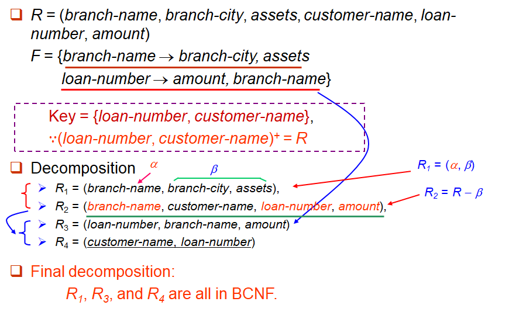

Relational Database Design¶
关系数据库设计的目标是生成一组关系模式。这可以通过设计适当的标准形式(normal form)的模式来实现。
First Normal Form | 第一范式¶
如果关系模式R的所有属性的域都是原子(atomic)的，那么关系模式R就是第一范式（1NF）。即域的元素可以被认为是不可分割的单位。
对于以下情况，不满足原子性：
- 复合属性(composite attributes) --- set of names
- 多值属性(multi-value attributes) --- a person’s phones
- 复杂数据类型(complex data type) --- object-oriented
Note
对于关系型数据库，要求所有关系都是第一范式。
Functional Dependencies | 函数依赖¶
对于 \(R\) 的函数依赖 \(\alpha \rightarrow \beta\) 需要满足对于任何合法关系 \(r(R)\) ，当R的任意两个元组 \(t1\)和 \(t2\) 在属性 \(\alpha\) 上一致时，它们也在属性 \(\beta\) 上也一致，即满足映射关系：
对于以下关系：
- \(A\rightarrow B\) 一定不成立
- \(B\rightarrow A\) 可能成立

Key¶
- 当且仅当满足 \(K\rightarrow R\) 时，\(K\) 是超码
- 当且仅当满足 \(K\rightarrow R\) 且不存在 \(\alpha \subset K,\alpha \rightarrow R\)时，\(K\) 是候选码
Trivial / Non-Trivial¶
- Trivial: \(\alpha \rightarrow \beta ,\text{if}~\beta \subseteq \alpha\)（平凡的函数依赖）
- Non-trivial: \(\alpha \rightarrow \beta ,\text{if}~\beta \not\subseteq \alpha\)（非平凡的函数依赖）
Armstrong’s Axioms¶
- 如果 \(\beta \subseteq \alpha\)，则 \(\alpha\rightarrow\beta\) （reflexivity, 自反律）--- travial
-
如果 \(\alpha\rightarrow\beta\)，则 \(\gamma\alpha\rightarrow\gamma\beta\) (\(\gamma\alpha\rightarrow\beta\)) （augmentation, 增补律）
-
如果 \(\alpha\rightarrow\beta\)，且 \(\beta\rightarrow\gamma\)，则 \(\alpha\rightarrow\gamma\) （transitivity, 传递律）
补充定律¶
-
如果 \(\alpha\rightarrow\beta\)，且 \(\alpha\rightarrow\gamma\)，则 \(\alpha\rightarrow\beta\gamma\) （union, 合并律）
-
如果 \(\alpha\rightarrow\beta\gamma\) ，则\(\alpha\rightarrow\beta\)，且 \(\alpha\rightarrow\gamma\) （decomposition, 分解律）
-
如果 \(\alpha\rightarrow\beta\) ，且 \(\gamma\beta\rightarrow\delta\)，则 \(\alpha\gamma\rightarrow\delta\) （pseudotransitivity, 伪传递律）
Closure¶
给定一个函数依赖集 \(F\) ， \(F\) 在逻辑上蕴含了某些其他的函数依赖。
- E.g. 如果 \(F=\{A\rightarrow B,B\rightarrow C\}\)则蕴含了函数依赖\(A\rightarrow C\)
对于一个函数依赖集 \(F\) ，其闭包形式(closure of F)，用 \(F^+\) 表示，定义为包含所有 \(F\) 所蕴含的函数依赖的函数依赖集。
计算¶
Note
对于一个有n属性的函数依赖集，其闭包至多有 \(2^{n}\times 2^{n}\)个函数依赖关系。
Closure of Attribute Sets¶
给定一个属性集 \(\alpha\)，在 \(F\) 下的 \(\alpha\) 的闭包用 \(\alpha^+\) 表示，定义为在 \(F\) 下所有可以由 \(\alpha\) 函数直接或间接决定的属性集。
计算¶

Example¶


Canonical Cover | 正则覆盖¶
正则覆盖 \(F_c\) 是函数依赖集 \(F\) 的最小化。得到 \(F_c\) 的关键步骤是消去现有函数依赖中的extraneous（无关的、多余的）属性，从而排除相应的函数依赖，使函数依赖集最小化。
Extraneous Attributes | 无关属性¶
Decomposition | 分解¶
Goals of Normalization¶
在关系 \(R\) 不是 "good" form ，则将其分解为一组关系 \({R1， R2，…， Rn}\)使得：
- 该分解是一个无损连接分解(lossless-join decomposition)。
- 分解是依赖保存(dependency preservation)。
- 每个关系 \(Ri\) 都是 good form —— BCNF或第三范式 ——没有冗余。
Lossless-join¶
- Lossless-join decomposition (无损连接分解)：\(r=\Pi_{R1}(r)\Join \Pi_{R2}(r)\)
- lossy-join decomposition (有损连接分解)：\(r\subset\Pi_{R1}(r)\Join \Pi_{R2}(r)\)
\(R\) 分解为 \(R1\) 和 \(R2\) 是无损连接的，当且仅当 \(F^+\)中至少满足下列依赖项之一：
- \(\{R1~\cap R2\}\rightarrow R1\)
- \(\{R1~\cap R2\}\rightarrow R2\)
Dependency preservation¶
设 \(F\) 是对模式 \(R\) 的依赖合；设 \(R1， R2，…Rn\) 是 \(R\) 的分解，\(F1，F2，…Fn\)是分解对应的依赖集。则需要满足：
Boyce-Codd Normal Form | BC范式¶
如果一个关于函数依赖集 \(F\) 的关系模式 \(R\) 符合BCNF，则对于所有 \(F^+\) 中的函数依赖 \(\alpha \rightarrow \beta,\text{where} ~\alpha\subseteq R\text~{and}~\beta \subseteq R\)，
至少满足以下条件的其中一个：
- \(\alpha \rightarrow \beta\) 是平凡(trabial)的（即 \(\beta \subseteq \alpha\)）
- \(\alpha\) 是 \(R\) 的超码（即 \(R\subseteq\alpha ^+，\alpha \rightarrow R\)）
Example¶

检验¶
单个依赖¶
对于一个非平凡函数依赖 \(\alpha\rightarrow\beta\) ：
- 计算 \(\alpha^+\)
- 验证 \(\alpha^+\) 是否包含 \(R\) 中的所有属性，即 \(\alpha\) 是 \(R\) 的超码
整个关系模式¶
要检查关系模式 \(R\) 是否是BC范式，只需检查给定依赖集 \(F\) 中的依赖项是否违反BC范式，而不必检查 \(F^+\) 中的所有依赖项。
- 如果 \(F\) 中的依赖项都不会导致违反BC范式，那么 \(F^+\) 中的依赖项也不会导致违反BC范式。
Note
\(F^+\) 是由Armstrong的3个公理从 \(F\) 推出的, 而任何公理都不会使Functional Dependency (FD)左边变小(拆分), 故如果F中没有违反BCNF的FD (即左边是superkey), 则 \(F^+\) 中也不会.
Note
可在 \(F\) 下判别 \(R\) 是否违反BCNF, 但必须在 \(F^+\) 下判别 \(R\) 的分解式是否违反BCNF.
BCNF分解算法¶
Example¶

Note
在BCNF分解中不一定满足所有三个设计目标： - Lossless join - BCNF - Dependency preservation
Third Normal Form¶
如果一个关于函数依赖集 \(F\) 的关系模式 \(R\) 符合第三范式(3NF)，则对于所有 \(F^+\) 中的函数依赖 \(\alpha \rightarrow \beta,\text{where} ~\alpha\subseteq R\text~{and}~\beta \subseteq R\)，
至少满足以下条件的其中一个：
- \(\alpha \rightarrow \beta\) 是平凡(trabial)的（即 \(\beta \subseteq \alpha\)）
- \(\alpha\) 是 \(R\) 的超码（即 \(R\subseteq\alpha ^+，\alpha \rightarrow R\)）
- \(\beta - \alpha\) 中的每个属性 \(A\) 都包含在 \(R\) 的候选码中（不一定在同一个候选码中）
即当 \(\beta\) 为非主属性时, \(\alpha\) 必须是码； 但当 \(\beta\) 为主属性时, 则 \(\alpha\) 无限制。（其中主属性为候选码中的所有属性）
冗余¶
检验¶
只需要检查 \(F\) 中的 FD，不需要检查 \(F^+\) 中的所有FD。
3NF分解算法¶

3NF和BCNF的区别¶
总是可以将关系分解为3NF且满足：
- 分解是无损的
- 依赖关系被保留
对于BCNF的分解可以满足：
- 分解是无损的
- 但是保持依赖关系可能做不到的
Multivalued Dependencies¶
在多值依赖中，如果对于关系模式 \(R\) 中的属性集 \(X\) 、\(Y\)，对于 \(X\) 的每一个确定值，都存在 \(Y\) 的一组值与之对应，且这组 \(Y\) 的值与其他属性 \(U-X-Y\) 无关，则称 \(Y\) 多值依赖于 \(X\)，记作 \(X→→Y\)
性质¶
-
互补性：如果 \(X→→Y\) ，则 \(X→→(U *–* X *–* Y)\)
-
自反性：如果 \(Y ⊆ X\)，则 \(X→→Y\)
-
增广性：如果 \(X→→Y\) 且 \(V ⊆ W\)，则 \(WX→→VY\)
-
传递性：如果 \(X→→Y\) 且 \(Y→→Z\) ，则 \(X→→(Z – Y)\)
多值依赖与函数依赖的区别¶
-
函数依赖 \((X→Y)\) 表示 \(X\) 唯一决定 \(Y\) ，而多值依赖 \((X→→Y)\) 表示 \(X\) 决定 \(Y\) 的一组值
-
所有函数依赖都是多值依赖的特例
-
多值依赖描述的是更一般的独立性关系
Fourth Normal Form¶
如果一个关于函数依赖与多值依赖集 \(D\) 的关系模式 \(R\) 符合4NF，则对于所有 \(D^+\) 中的多值依赖 \(\alpha \rightarrow\rightarrow \beta,\text{where} ~\alpha\subseteq R\text~{and}~\beta \subseteq R\)，
至少满足以下条件的其中一个：
- \(\alpha \rightarrow \beta\) 是平凡(trabial)的（即 \(\beta \subseteq \alpha\)）
- \(\alpha\) 是 \(R\) 的超码（即 \(R\subseteq\alpha ^+，\alpha \rightarrow R\)）
Note
如果一个关系是4NF，那么一定是BCNF
分解算法¶